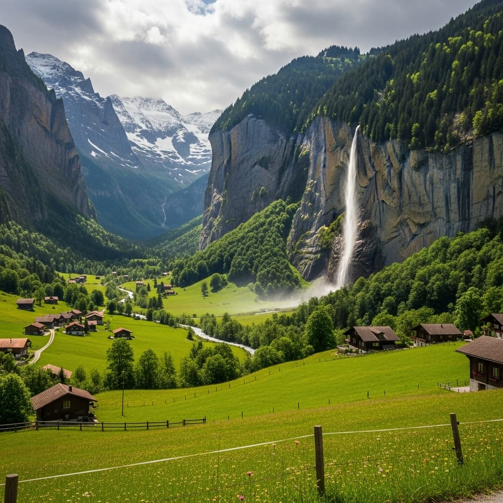
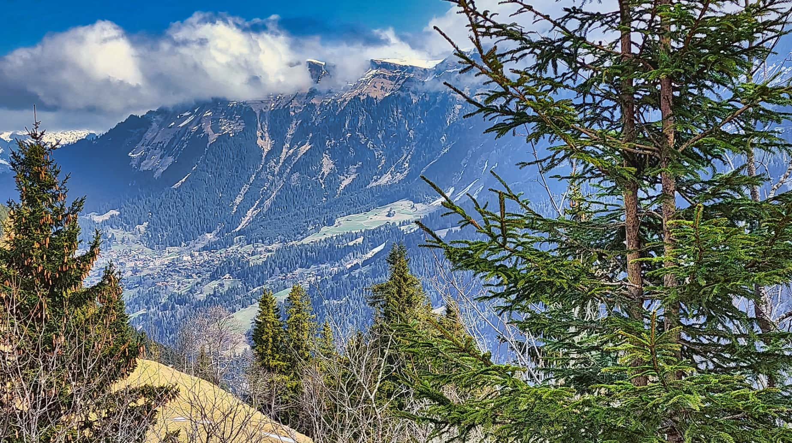
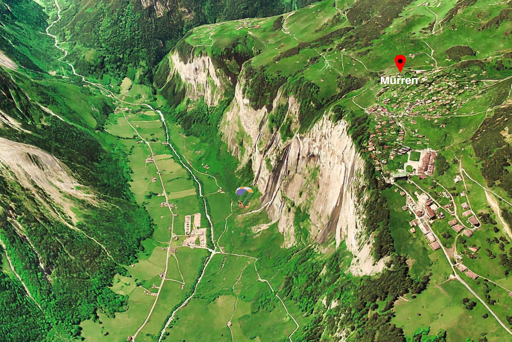
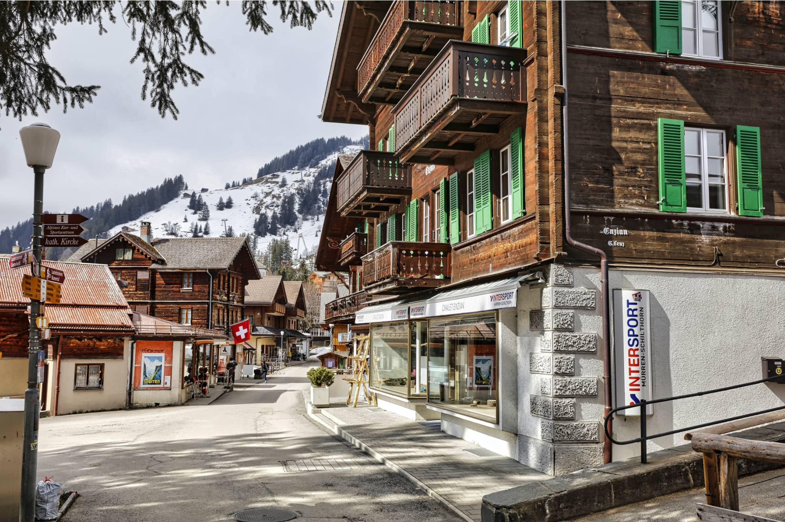
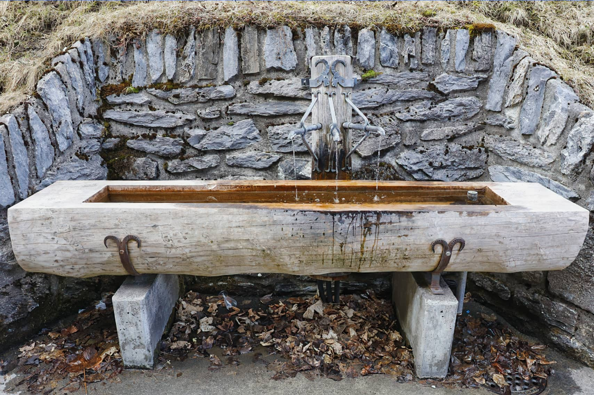
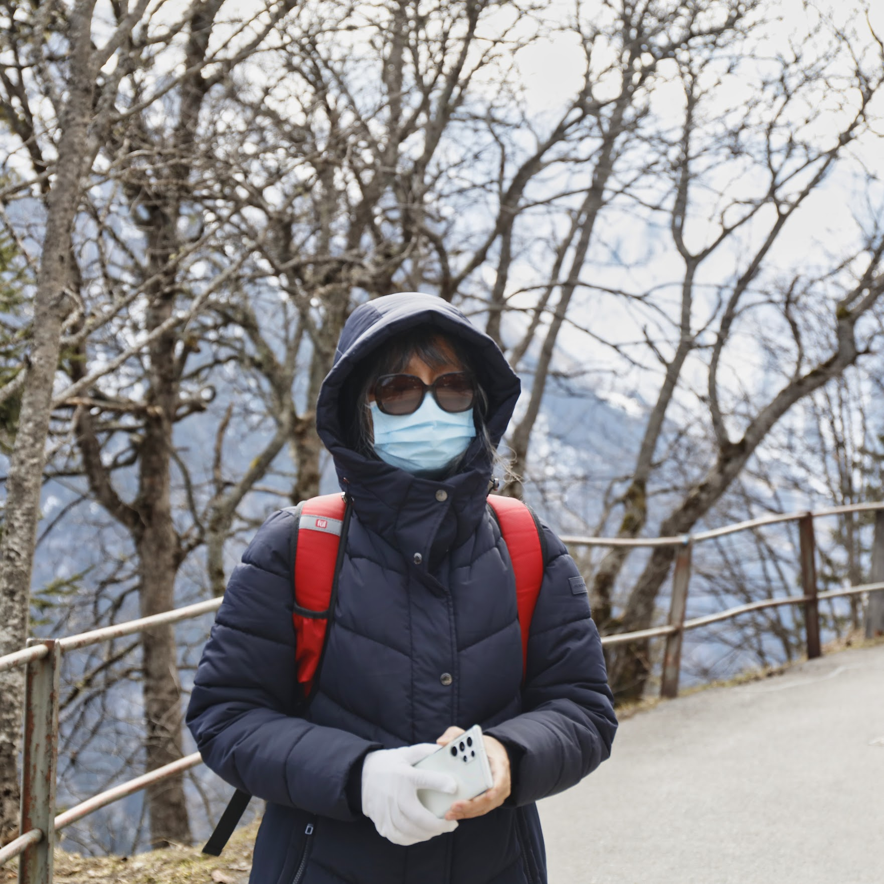

Our driving trip through five countries

We leased a car in Paris and spent a month driving through France, Switzerland, Germany, the Netherlands, and Belgium. Each country offered its own unique charm, from the historic towns of Alsace in France to the stunning alpine scenery of Switzerland, the picturesque villages along the Rhine in Germany, the vibrant tulip fields in the Netherlands, and the medieval architecture of Belgium. This road trip allowed us to experience a diverse range of cultures, cuisines, and landscapes, making it an unforgettable adventure.
Lauterbrunnen Valley and Mürren

From the Salzano Hotel we drove a short distance to Lauterbrunnen Valley’s iconic Staubbach Falls, then rode the cable car to Grütschalp and then a train to Mürren — a picturesque, car-free village high in the Bernese Alps.

Picture from the train on the way to Mürren.

(Google Earth picture)
Mürren clings to a cliffside high
above the Lauterbrunnen Valley—cozy chalets, green meadows, and
jaw-dropping views make it feel like a hidden alpine world.

Mürren’s wooden chalets with green shutters line quiet streets, backed by snowy peaks. This car-free alpine village blends rustic charm and breathtaking scenery, making every corner feel like a postcard from the Swiss Alps.

That glacier water may look tempting, but don’t drink it - official sites caution it can carry bacteria, parasites, heavy metals, or even animal waste.

It’s freezing up here in early April. Unfortunately, I left this warm jacket at Paris–Charles de Gaulle airport. It's becoming a bad habit. On a previous trip, I forgot my favorite white jean jacket in a Spanish hotel. 🥺💔
Travel tips
- Another way to reach Mürren:
- From Lauterbrunnen, just hop on a short bus ride to Stechelberg at the end of the valley, where the Schilthornbahn station waits.
- From there, the cable car climbs steeply up through Gimmelwald and on to Mürren, dropping you at the southern end of the village.
- Once you’re in Mürren, don’t miss the funicular up to Allmendhubel - a sunny hilltop with big views and a cozy restaurant.
- If you’re a James Bond fan, keep riding the Schilthornbahn: stop at Birg for the cliff-hugging “Thrill Walk,” then continue to Piz Gloria, the revolving restaurant made famous in On Her Majesty’s Secret Service (1969).
-
Other can’t-miss experiences nearby:
- Mürren viewpoint - a five-minute quick stroll from the Mürren BLM train station.
- Mürrenbachfall - A scenic hour-long walk to one of the valley’s tallest waterfalls.
- Northface Trail - a rewarding hike with breathtaking views of the Eiger’s north face.
- Paragliding - Airtime Paragliding and Paragliding Muerren are both highly rated. Launch from the cliffs of Mürren and glide nearly 3,000 feet down to Stechelberg, passing waterfalls and sheer rock faces. It’s an experience you’ll never forget.
- Here is the Mürren local map.